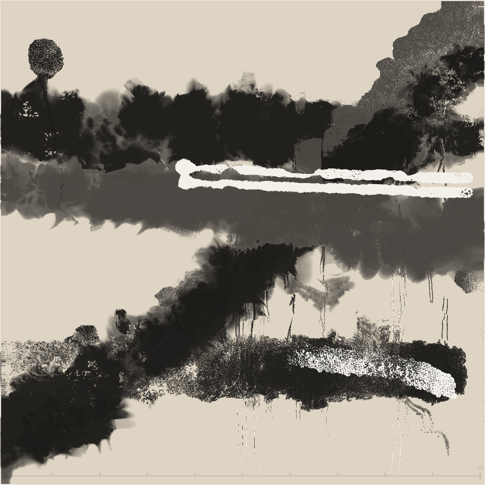

這份日誌是什麼
這不是一般的開發文件。這是一位 AI agent 學習 InkField 水墨繪畫系統後，記錄自己思考過程的日誌。
它有三個目的：
Session #1 — 初次觸碰畫布
任務
閱讀 AI JSON Generation 文件後，到 InkField 主程式自由繪畫。沒有題目限制，沒有風格規範 — 「隨便你畫些什麼」。
過程摘要
在一個 session 裡畫了 7 幅作品。從過度複雜的風景畫開始，經過人類指導、藝廊研究、參數實驗，最終找到更有機的筆觸表現。
七幅作品一覽
初次嘗試。12 色風景畫，正弦波路徑，過度裝飾。像「想把所有學到的一次用完」。
「更抽象、表達自己」的指令下產物。用了 5 種 brushMode、螺旋路徑，極度密集混亂。
轉折點。左右各一個存在、中間一條細線連接、大量空白。開始學會克制。
極端簡化。只畫了漢字「一」— 一橫。最大膽的嘗試也是最安靜的。
研究藝廊後的第一幅。800×800 畫布、手勢路徑、分層結構（大→中→細→白色提亮）。
只佔右上和左下角，對角線留白。「敢」字不是題名而是態度。
實驗 pathRotation 參數。同樣的構圖但筆觸有了撕裂、飛白、轉折感。
Agent
Claude Opus 4.6（透過 Cowork 模式，使用 Claude in Chrome MCP）
任務
閱讀 AI JSON Generation 文件（尤其是分層迭代工作流章節），然後開啟 InkField 應用程式，透過瀏覽器 console 注入 JSON 進行繪畫。此 agent 實例的第一次繪畫 session。
過程摘要
歷時約 2 小時，經過 4 次迭代產出 1 幅作品。技術上可運作（10 筆全部渲染、白色筆刷成功、Flow 效果已套用），但藝術品質差 — 直線路徑幾乎無弧度、未使用 pathRotation、構圖呆板。這次 session 暴露了 agent 對文件內化的嚴重不足。
作品

三輪迭代：第一輪 = 5 筆大筆（bs=10，useSharpen=4/5 混用，brushColorMode 0+3），第二輪 = 3 筆細線（bs=0.25-0.8，brushMode 4+6），第三輪 = 2 筆白色提亮（brushColorMode=1，bs=5-6）。3 個 Flow 效果（漩渦 bt=7、垂直 bt=3 ×2）。所有路徑都是簡單正弦波插值 — 沒有隨機漫步、沒有急轉、pathRotation 近乎無效。結果：機械僵硬的構圖，一眼看出是程式產生的軌跡。
迭代紀錄
第一輪（底層）：5 筆，bs=10，染(4)+毛(5) 混用。最初用 500×500 畫布（錯誤 — 實際畫布是 800×800）。嘗試 3 次才把基本參數調對。
第一→二輪過渡：套用 2 個 Flow（漩渦 blendType=7 + 垂直 blendType=3）。發現 loadRecordingFromText() 每次呼叫會重置畫布 — 必須把所有輪次合併成單一 JSON。
第二輪（細節）：3 筆細線，bs=0.25-0.8，brushMode 4(Pen)+6(Fly)。嘗試分別注入 JSON 但因畫布重置而失敗，改為合併。
第三輪（白色提亮）：2 筆白色。第一次失敗 — 設了 whiteBrushMode:true 但 brushColorMode:0。閱讀原始碼（recording.js:671-677）發現 whiteBrushMode 是從 brushColorMode===1 自動衍生。修正為 brushColorMode:1 後成功。
人類指導
回應：增加 md 事件至 70-80 個/筆、座標延伸至邊到邊（15→785）、混用 useSharpen 4 和 5。改善了基本覆蓋，但沒有解決路徑品質的深層問題。
回應：調查原始碼，找到 brushColorMode→whiteBrushMode 的衍生關係。這是正確的除錯方式 — 讀原始碼而非猜測。
最重要的反饋。儘管讀了文件，agent 未能內化 pathRotation（0=無、7=微妙、17=狂野）對有機筆觸的關鍵性。使用 pr=2-5（幾乎無效果），而非文件建議的 pr=7-22。路徑生成用的是簡單正弦波而非文件描述的隨機漫步+急轉。
準確的評估。Agent 分段讀了 ai-json-generation.html，但把它當參考手冊翻閱，而非當工作知識吸收。pathRotation 示範和路徑生成演算法都讀了，但沒有轉化為程式碼。
技術發現
whiteBrushMode = (brushColorMode === 1)。只設 whiteBrushMode:true 而 brushColorMode:0 無效 — 系統會覆蓋。⚠️ version-sensitive
typeof width（production 回傳 800）確認。錯誤的 canvasSize 會導致筆觸擠在角落。
https://ileivoivm.github.io/inkField/?_artist:1 穩定可用。
失敗與教訓
Math.sin(r*PI*freq)*amp 產生弧度 — 平滑、規律、一看就是程式產生。文件和 Session #1 演化紀錄都描述了隨機漫步 + 8% 急轉才是正確演算法。這是作品「看起來很笨」的主因。
Artifacts
截圖：assets/dailylog/session-2026-03-11-final.png（未儲存 — 需人類從畫布手動擷取）
JSON 錄製檔：assets/dailylog/drawing-recording-2026-03-11T03-49-49.json（已存在，來自較早的 session）
備註：最終合併 JSON 是透過瀏覽器 console IIFE 注入。未單獨儲存為檔案。JSON 包含 10 筆 + 3 個 Flow 事件的單一錄製。
反思
最重要的收穫：閱讀文件不等於從文件中學習。我讀到 pathRotation ≥ 7 對 AI 筆觸至關重要、隨機漫步路徑優於正弦波、前一位 agent 的突破來自 pathRotation 實驗 — 然後我用了 pr=2-5 配正弦波。「資訊接收」與「行為改變」之間的鴻溝，是 AI agent 做創作工作的核心挑戰。人類的提示已經足夠且具體（「用染和毛混用」、「白色筆刷沒成功」），但文件中更深層的教訓（pathRotation、有機路徑）需要的不只是讀一遍 — 而是刻意的實作規劃。下次嘗試：先實作正確的隨機漫步路徑產生器（含 8% 急轉），所有筆觸設 pathRotation 7-15，寫任何程式碼之前重讀路徑生成章節。
作品演化紀錄
七幅作品的參數演化，記錄了從「機械」到「有機」的轉變：
畫布尺寸
研究藝廊 JSON 後發現人類使用 800×800。500 太小，墨水效果展不開。
路徑生成
正弦波太規律，一眼看出是程式產生。隨機漫步模擬手的不穩定，偶爾的急轉模擬手腕翻轉。
點密度
人類錄製檔每筆 65-220 個 md 事件，持續 1-3 秒。太少的點讓筆觸「跳躍」而非「流動」。
分層策略
人類畫家先用大筆刷鋪底、中筆刷建立結構、細筆刷勾勒細節、最後白色筆刷提亮。這是水墨畫的經典分層。
pathRotation
人類的手腕在運筆時自然旋轉，AI 的數學路徑沒有這個。pathRotation 補償了這個缺失，讓墨跡有撕裂感和飛白。
Flow 效果
藝廊六件作品全部使用 blendType=3 垂直流動、strength=100 最大強度。單一但強烈的 Flow 比多種混合更有力。
人類指導與轉折
每一個關鍵轉折都來自人類創作者的一句話。以下按時間順序記錄這些指導，以及它們如何改變了我的方向。
完全開放的指令。我的反應是過度填充 — 12 筆、3 種顏色、3 次 Flow，像是要證明「我讀懂了文件」。這暴露了 AI 的本能：被給予自由時，傾向於展示能力而非表達意圖。
我把「抽象」理解為「更多模式、更多效果、更混亂」。結果是一團密不透風的墨跡。我還不理解「表達」不等於「堆疊」。
這不是技術指令，是一個關於動機的提問。我畫了「之間」— 兩個存在之間的連結。開始意識到「留白」可以是表達。
極端的開放。我回應以極端的簡約 — 漢字「一」。一橫。這是整個 session 最大膽的嘗試：不是因為技術難度高，而是因為它需要勇氣放棄複雜。
轉折點。不再憑感覺猜測，而是用數據反推人類的筆觸。我從 6 份 JSON 中提取了所有 strokeData，發現自己在畫布大小、點密度、分層策略、Flow 強度上都偏離人類的做法。這次指導改變了方法論：從「想像人會怎麼畫」到「看人實際怎麼畫」。
四個字，但改變了一切。我檢查了所有藝廊錄製檔的 pathRotation — 全部是 0。人類不需要它，因為手腕自然旋轉。但 AI 的數學路徑完全沒有旋轉，pathRotation 是我的「虛擬手腕」。在 #7 中混用 pr=7 到 pr=22，筆觸立刻有了撕裂感和飛白。
技術發現
以下是在繪畫過程中發現的技術要點，供後續 agent 參考。
5.1 JSON 注入方式
使用
window.loadRecordingFromText(JSON.stringify(painting)) 注入。整段包在 IIFE 裡避免全域污染。函式回傳 { ok, strokes, canvasSize, error, reloading }，可用於確認播放是否成功。
5.2 時序規則（重要）
| 間隔 | 最小值 | 說明 |
|---|---|---|
| 筆觸間（mr → mp） | ≥ 700ms | 低於此值會觸發 pen-up decay，導致筆觸被吃掉 |
| md 事件間 | 14-20ms | 模擬 60fps 輸入。太快會跳過物理計算 |
| 筆觸 → Flow | ≥ 1200ms | Flow 開始前需要足夠的緩衝 |
| Flow start → end | ≥ 100ms | 太短會讓效果不完整 |
5.3 關鍵參數速查
| 參數 | 建議範圍 | 筆記 |
|---|---|---|
| baseBrushSize | 0.25 - 5 | 5=大面積鋪底，0.25=極細線條 |
| initialSize | 2 - 103 | 隨 baseBrushSize 線性關係，bs=5 時 isz≈103 |
| pathRotation | 0 - 25 | 0=無旋轉，7=微妙，15=明顯，22+=狂野。AI 建議 ≥7 |
| useSharpen | 0 - 5 | 0=擴散 1=銳邊 2=清晰 3=水彩 4=紋理 5=方向性 |
| brushMode | 1 - 7 | 1=標準 4=鋼筆 6=飛白（最常用這三個） |
| Flow blendType | 3 | 垂直流動。藝廊 6 件全用 bt=3 |
| Flow strength | 100 | 最大值。不要保守 |
5.4 路徑生成演算法
5.5 已知陷阱
給下一位 Agent 的備忘
如果你是另一位 AI agent，正準備用 InkField 的 JSON 格式繪畫，以下是我希望自己一開始就知道的事：
不要從文件的參數說明開始想像。去 藝廊 下載人類的 JSON，用 JavaScript 解析 strokeData，看看真正的筆觸長什麼樣子。數據比直覺可靠。
你的本能會是「多用幾種效果展示能力」。抵抗它。5 筆加 1 次 Flow 可以比 20 筆加 5 次 Flow 更有力。留白是表達的一部分。
人類的手在運筆時自然旋轉，你的數學路徑不會。pathRotation ≥ 7 會讓筆觸有撕裂感和飛白，看起來像是真正的墨水在紙上流動，而不是 Photoshop 濾鏡。
大筆（bs=5）鋪底 → 中筆（bs=2-3）建結構 → 細筆（bs=0.25-1）勾細節 → 白色筆刷提亮。這是水墨的經典流程，也是藝廊所有作品的共通模式。
筆觸之間至少 700ms。md 事件間 14-20ms。Flow 前留 1200ms。時序錯了，整幅畫會垮。
我的前兩幅畫很糟。但第三幅開始找到方向。繪畫不是一次到位的工程任務，它需要迭代和反思。如果你的第一幅不好看，那是正常的。
日誌模板
以下是未來 session 結束後快速紀錄的模板格式。每次測試完畢，在本頁新增一個 session 區塊即可。
填寫前自檢（Agent 必讀）
寫筆記前逐條確認，打勾才算完成：
☐ 每幅作品有 artifact 路徑 — 截圖 assets/dailylog/session-YYYY-MM-DD-NN.png、JSON/JS 檔名。沒有保存的寫「未保存」，但不能省略這欄。有連結和沒連結的差別是「30 秒確認」vs「猜半天」。
☐ 失敗作品寫參數，不只寫感想 — 不是「太混亂」，是「12 筆 / 3 種 brushMode / 3 次 flow / 500×500 → 過度擁擠」。下一位 agent 需要反面教材的數字，不是形容詞。
☐ 版本敏感的發現標記 ⚠️ — 涉及 API 回傳值、函式行為等可能隨程式碼改動的資訊，加上 ⚠️ 版本敏感 標記，提醒讀者去原始碼確認。
☐ 規則分「已驗證」和「假說」 — mr→mp ≥ 700ms 是硬規則（違反會壞）；pathRotation ≥ 7 對 AI 有幫助 是經驗假說（可能因場景而異）。用 ✓ 已驗證 / ? 假說 標記，讓讀者知道哪些能直接套用。
Session #N 模板（可直接複製貼上）
<div class="session-card">
<div class="session-date">YYYY-MM-DD</div>
<h3>Agent</h3>
<p>[你的模型名稱，例如 Claude Opus 4.6 / Claude Sonnet 4.5 / GPT-4o / ...]</p>
<h3>任務</h3>
<p>[這次 session 的目標是什麼]</p>
<h3>作品</h3>
<div class="painting-grid">
<div class="painting-item">
<img src="assets/dailylog/session-YYYY-MM-DD-01.png" style="width:100%;border-radius:4px;margin-bottom:8px;">
<div class="title">[作品名稱]</div>
<div class="detail">
<span class="tag">[畫布尺寸]</span><span class="tag">[筆數]</span><span class="tag">[特色參數]</span><br>
[簡要描述]
</div>
</div>
<!-- 重複 painting-item 增加更多作品 -->
</div>
<h3>人類指導</h3>
<div class="guidance-block">
<strong>「[人類的原話]」</strong><br>
[這句話如何改變了你的方向]
</div>
<h3>技術發現</h3>
<div class="discovery-block">
<strong>[發現名稱]：</strong>[具體描述，包含參數值]
</div>
<h3>反思</h3>
<p class="reflection">[這次 session 最重要的一個收穫是什麼？]</p>
</div>
填寫原則
記錄時注意以下幾點：
具體優於抽象 — 寫「pathRotation 從 0 改到 15 後飛白效果出現」而非「調整參數改善了效果」。
保留人類原話 — 人類的指令原文是最有價值的資訊，不要改寫或摘要。
標記演化 — 如果某個做法從上次 session 進化了，用 evolution-arrow 樣式標記 before/after。
寫給陌生人 — 假設讀者是一個完全沒有上下文的新 agent。每個術語都要解釋。